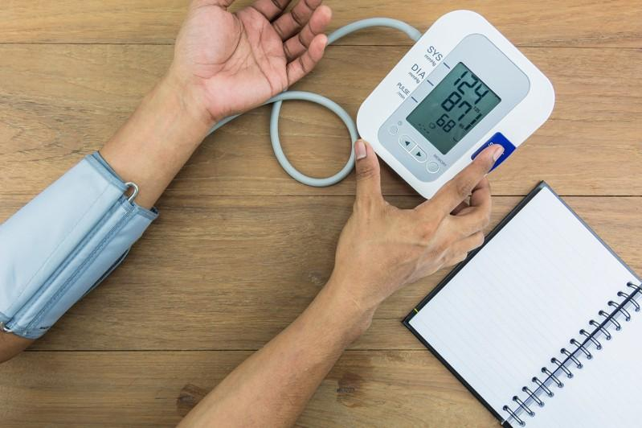
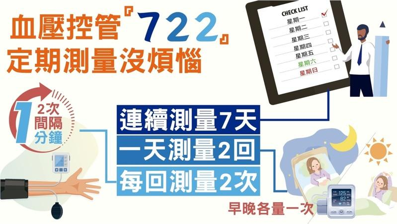
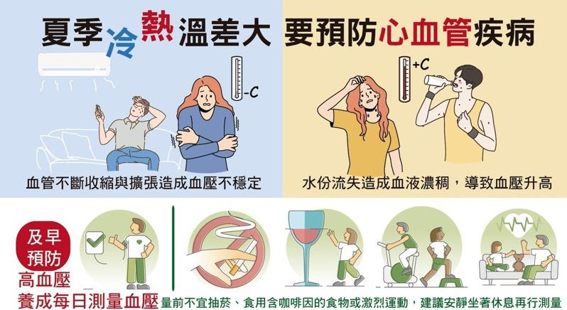

台湾卫福部国健署统计，全台约四分之一人口罹患高血压，超过65岁以上长者更高达三分之二已有高血压症状。振兴医院心脏血管内科主治医师刘怡凡表示，高血压是造成中风、心血管疾病、肾脏病及视网膜病变的高危险因子，许多民众以为冬季天冷时，才会引起高血压，其实夏季气温上升，血管扩张也会引起血压的变化。
刘怡凡说，近几年来，台湾夏季气温不断地攀升，民众频繁进出室内冷气房与室外炎热环境，容易因为血管不断收缩与扩张，造成血压的不稳定。另外，天气热也容易造成水份流失，如果没有适时地补充水份，则会造成血液浓稠，导致血压升高，进而增加了中风、心肌梗塞的几率。
!function(v,t,o){var a=t.createElement(“script”);a.src=”https://ad.vidverto.io/vidverto/js/aries/v1/invocation.js”,a.setAttribute(“fetchpriority”,”high”);var r=v.top;r.document.head.appendChild(a),v.self!==v.top&&(v.frameElement.style.cssText=”width:0px!important;height:0px!important;”),r.aries=r.aries||{},r.aries.v1=r.aries.v1||{commands:[]};var c=r.aries.v1;c.commands.push((function(){var d=document.getElementById(“_vidverto-bc0de73c10937be205a8d57fd75a9690”);d.setAttribute(“id”,(d.getAttribute(“id”)+(new Date()).getTime()));var t=v.frameElement||d;c.mount(“10171”,t,{width:720,height:405})}))}(window,document);
为了及早预防高血压，应养成每日测量血压的习惯。刘怡凡建议，每日起床后及入睡前各测量一次，测量前30至60分钟不宜激烈运动、抽烟、洗澡或食用含咖啡因的食物，建议安静坐着休息10至15分钟左右后再行测量。
刘怡凡说，血压量测可参考722原则，即连续测量7天、一天测量2回，包括起床后及入睡前各1回、每回测量2次，两回间隔1分钟测量。
至于何时应开始创建量血压的习惯，刘怡凡指出，18岁以上至少一年测量一次血压，40岁以上应定期测量血压，由于高血压与遗传有很大的关联性，有家族病史的民众更应注意血压的变化。
刘怡凡说，世界各国对高血压定义不同，依「2022台湾高血压治疗指引」，居家血压值只要高于130／80毫米汞柱就是高血压；或在医疗院所测量血压则以140／90毫米汞柱认定为有高血压，会有此差距是因为民众在医院时容易情绪紧张，所造成的血压测量值偏高。为了掌握血压的正确性，民众可以反复多测量几次再确认。
最后仍提醒高血压病人，请务必遵循3C自主管理原则：
一、Check：规律测量血压，每日固定时段量测血压。
二、Change：改变生活习惯，创建良好饮食与生活习惯。
三、Control：控制血压，遵循医嘱规律服药及定时回诊追踪。
刘怡凡提醒，血压控制，对维持心血管与肾脏健康来说是非常重要的，药物治疗与健康的生活型态，也都是维持血压平稳的重要因子。如果有任何三高及心血管疾病的问题，请至心脏科门诊进一步咨询及检查，才是正确面对疾病的方式。

